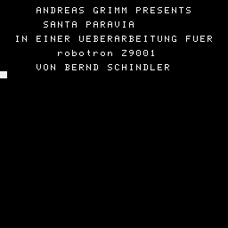
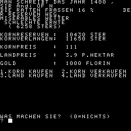
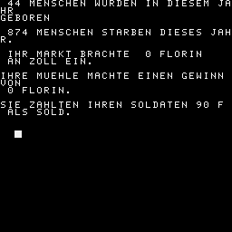

schreibt hin und wieder über den Bildschirmrand. Es sieht so nach einer
Zwischenversion verglichen mit [75b9fcd76fa39557454f08460b34e45b] aus. Manche
Stellen wurden angepasst, andere noch nicht.
Diese Version unterscheidet sich nur durch Änderungen im Text.
Irgendwo gab es noch eine Version PARSKAT, bei der das korrigiert wurde.
950 WINDOW:CLS
1000 REM *****************************
1010 REM + SANTA PARAVIA,DEUTSCH +
1020 REM +---------------------------+
1030 REM +TEGETHOFF,24.05.81/01.09.82+
1040 REM *****************************
1050 GOSUB 9000
1060 JAHR = 1400
1090 FOR M=0 TO 7:READ TB$(M):NEXT
1100 DATA SIR,BARON,COUNT,MARQUIS,DUKE,GRAND DUKE,PRINCE,KING
1120 DATA "SANTA PARAVIA","FIBONACCIO","TORRICELLA","MOLINETTO","FONTA"
1130 DATA "MARINETTO"
1140 INPUT "WIEVIELE PERSONEN WOLLEN SPIELEN(1-6)";SA:PRINT:PRINT
1150 IF SA<1 OR SA>6 THEN 1140
1210 PRINT "WENN DIE STADT":PRINT "NICHT WIE ANGEGEBEN HEISSEN"
1211 PRINT "SOLL,DANN GEBEN SIE NICHTS,"
1220 PRINT "SONST DEN NAMEN EIN.":PRINT
1230 FOR SP=1 TO SA:READ T$
1240 PRINT "WER IST DER BEHERRSCHER VON"
1241 PRINT T$:INPUT N$
1280 PRINT "WOLLEN SIE '" T$"'UMBENNEN":U$="":INPUT U$:PRINT:PRINT
1290 N$(SP)=" "+N$+" OF "+U$:IF U$="" THEN N$(SP)=N$(SP)+T$
1300 S1(SP)=25:S2(SP)=10:S3(SP)=5:JU(SP)=2
1310 GD(SP)=1000:LA(SP)=10000:KO(SP)=5000
1320 LS(SP)=100:VO(SP)=2000
1330 AD(SP)=4:SO(SP)=30:GE(SP)=5:KA(SP)=25
1340 NEXT
1350 PRINT "SPIELSTAERKE :"
1360 PRINT "1.ANFAENGER 3.MEISTER"
1370 PRINT "2.MIT ERFAHRUNG 4.KOENNER":PRINT "5.-8.WAHNSINN":PRINT:PRINT
1390 PRINT "SPIELSTAERKE :":INPUT S$:PRINT
1400 SS=VAL(S$):IF SS=0 OR S$=""OR SS>8 THEN 1400
1410 SS=SS+4:TJ(0)=1:N$(0)=" PEPPONE OF MONTERANE"
1440 FOR SP=1 TO SA:SU(SP)=INT(1413+SS*1.5+RND(1)*26+RND(1)*10):NEXT
1600 REM
1630 FOR SP=1 TO SA:IF SU(SP)<JA THEN 1710
1640 IF SU(SP)=JA THEN 1720
1650 IF VO(SP)<200 THEN SU(SP)=JA:GOTO 1720
1660 WINDOW:CLS:GOSUB 2000
1670 GOSUB 3000
1680 WINDOW:CLS:GOSUB 4000
1690 WINDOW:CLS:GOSUB 6000
1700 GOSUB 7000
1710 NEXT:JA=JA+1:GOTO 1600
1720 WINDOW:CLS:PRINT:IF VO(SP)<200 THEN 1721
1721 PRINT " HURRA!!";TB$(TJ(SP));N$(SP)
1722 PRINT
1723 PRINT " WURDE ERMORDET":GOTO 1780
1770 PRINT " WIR TRAUERN UM";TB$(TJ(SP));NA$(SP)
1771 PRINT
1780 PRINT " GEB.1381,GEST.";JA
1790 H$=" SIE":IF TJ(SP)<8 THEN H$=" ER"
1791 PRINT
1800 PRINT H$;" STARB
1801 PRINT
1802 IF VO(SP)>200 THEN 1810
1803 PRINT " NACH LANGJAEHRIGER TYRANNEI"
1804 PRINT
1809 PRINT " DURCH EIN ATTENTAT!":GOTO 1890
1810 IF JA<1449 THEN 1830
1811 PRINT " IN HOHEM ALTER NACH EINER"
1812 PRINT
1813 PRINT " LANGEN HERRSCHAFT":GOTO 1890
1830 ON(RND(1)*5)GOTO 1850,1860,1870,1880,1890
1840 PRINT " AN EINER GRIPPE,WAEHREND EINES"
1841 PRINT
1842 PRINT " EISIGEN WINTERS":GOTO 1890
1850 PRINT " WAEHREND EINER POCKENEPEDEMIE.":GOTO 1890
1860 PRINT " DURCH VERSEUCHTES WASSER AN TYPHUS.":GOTO 1890
1870 PRINT " NACH EINEM RAUBUEBERFALL WAEHREND"
1871 PRINT
1872 PRINT " EINER REISE.":GOTO 1890
1880 PRINT " DURCH VERGIFTETES FLEISCH."
1890 INPUT Q$:IF Q$=""THEN 1900:GOTO 1890
1900 GOSUB 8000
1910 VS=VS+1:IF VS<SA THEN 1710
1930 PRINT "_";" DAS SPIEL IST LEIDER ZU ENDE, DA ALLE"
1931 PRINT " "
1940 PRINT " TEILNEHMER DER TOD EREILT HAT."
1941 PRINT " "
1942 PRINT " "
1950 PRINT " ICH HABE EUCH ALLE UEBERLEBT."
1951 PRINT " "
1952 PRINT " "
1960 PRINT TB$(1);N$(0)
1970 INPUT Q$:IF Q$<>""THEN GOSUB 8000;END:GOTO 1970
2000 Z=RND(1)*30:KO(SP)=INT(KO(SP)*(100-Z)/100):RV=INT(Z)
2010 WE=(INT(RND(1)*5)+INT(RND(1)*6)+2)/2
2020 H=LA(SP):M=(VO(SP)-100*MU(SP))*5:IF M<0 THEN M=0
2030 IF M<H THEN H=M
2040 M=KO(SP):IF M<H THEN H=M
2050 ER=H*(WE-.5):KO(SP)=KO(SP)+ER
2060 GOSUB 7700:FLAG=0
2070 IF ERNTE<1 THEN Z=2:GOTO 2100
2080 Z=VE*1/ER:IF Z>2 THEN Z=2
2090 IF Z<.8 THEN Z=.8
2100 LP=INT((3*WE+INT(RND(1)*6)+INT(RND(1)*6)+12)*Z)
2110 KP=INT((20-WE*3+INT(RND(1)*5)+INT(RND(1)*5))*4*Z)
2120 WINDOW:PRINT "MAN SCHREIBT DAS JAHR";JA;","
2130 PRINT TB$(TJ(SP));N$(SP)
2140 IF FLAG>0 THEN 2180:FLAG=1
2150 PRINT "DIE RATTEN FRASSEN";RV;"% DER RESERVEN WEG."
2160 ON WE GOSUB 7710,7720,7730,7740,7750
2170 PRINT " (";ER;"STERS)":PRINT
2180 PRINT "KORNRESERVEN : ";KO(SP);"STER"
2190 PRINT "KORNVERLANGEN: ";VE;"STER "
2200 PRINT "KORNPREIS : ";KP:PRINT
2210 PRINT "LANDPREIS : ";LP*.1;"P.HEKTAR":PRINT
2220 PRINT "GOLD : ";GD(SP);"FLORIN "
2222 PRINT "1.KORN KAUFEN 2.KORN VERKAUFEN"
2223 PRINT "3.LAND KAUFEN 4.LAND VERKAUFEN"
2224 WINDOW 28,31,0,31:CLS
2230 PRINT "WAS MACHEN SIE? (0=NICHTS)":INPUT IN
2241 IF IN<0 OR IN>4 THEN 2230
2242 PRINT
2260 IF IN>0 THEN ON IN GOSUB 8300,8350,8400,8450:GOTO 2120
2280 PRINT "WIEVIEL KORN VERTEILEN SIE AN"
2281 INPUT "IHRE UNTERTANEN";GG
2285 FLAG=FLAG+1:IF FLAG=2 AND GG=0 THEN 2120
2290 IF GG<KO(SP)*.2 THEN GOSUB 2320:GOTO 2280
2300 IF GG>KO(SP)*.8 THEN GOSUB 2330:GOTO 2280
2310 KO(SP)=KO(SP)-GG:RETURN
2320 PRINT "SIE MUESSEN MINDESTENS 20% DES"
2321 PRINT "KORNS VERTEILEN!":RETURN
2330 PRINT "SIE MUESSEN MINDESTENS 20% DES"
2331 PRINT "KORNS ALS NOTRESERVE BEHALTEN!":RETURN
3000 WINDOW:CLS
3010 IF VE>GG THEN 3500
3020 GR=6:SR=2:GOSUB 8600
3030 IF S1(SP)+S2(SP)<35 THEN KA(SP)=INT(KA(SP)+1+RND(1)*4)
3040 IF S3(SP)<RND(1)*20+1 THEN GOSUB 3900
3050 IF VE*1.3>GG THEN 3200
3060 H=VO(SP)/1000:Z=10*(GG-VE)/GG
3070 H=Z*H*(1+RND(1)*25)+1+RND(1)*40:H=RND(1)*H+2:VO(SP)=INT(VO(SP)+H)
3079 PRINT
3080 PRINT INT(H);"MENSCHEN SIND ZUGEWANDERT."
3090 H=RND(1)*(H/5)+1:IF H>50 THEN H=50
3100 KA(SP)=KA(SP)+H:AD(SP)=AD(SP)+1:GE(SP)=GE(SP)+3
3200 PRINT
3210 H=MA(SP)*75:IF H>0 THEN GD(SP)=GD(SP)+H
3211 PRINT " IHR MARKT BRACHTE ";H;"FLORIN"
3213 PRINT " AN ZOLL EIN."
3220 H=MU(SP)*INT(60+RND(1)*460):IF H>0 THEN GD(SP)=GD(SP)+H
3221 PRINT
3222 PRINT "IHRE MUEHLE MACHTE EINEN GEWINN VON"
3224 PRINT H;"FLORIN."
3230 PRINT
3231 H=SO(SP)*3:GD(SP)=GD(SP)-H:PRINT "SIE ZAHLTEN IHREN SOLDATEN";H;"F"
3233 PRINT " ALS SOLD."
3240 PRINT
3250 IF LA(SP)/320-20>SO(SP) THEN 3600
3260 IF LA(SP)/250-20>SO(SP) THEN 3400
3270 FOR M=1 TO SA:IF M<>SP AND SO(SP)<SO(M)/1.4 THEN 3600
3280 NEXT
3400 PRINT " "
3410 INPUT " ";I$:IF I$="" OR I$<>"" THEN RETURN
3420 GOTO 3410
3500 H=(VE-GG)*100/VE-9:IF H>65 THEN H=65
3510 IF H<0 THEN H=0
3520 GR=2:SR=H+7:GOSUB 8600:GOTO 3200
3600 REM
3610 AG=0
3620 FOR M=1 TO SA:IF SP=M THEN 3640
3630 IF SO(M)>SO(SP) AND SO(M)>LA(M)/400 AND SO(M)=>SO(AG) THEN AG=M
3640 NEXT:IF AG>0 THEN LV=(SO(AG)*200+LA(SP)/4)*(0.3+RND(1)*0.4):GOTO 3660
3650 LV=1000*RN(1)*9000:IF LA(SP)>30000 THEN LV=LV+RND(1)*(LA(SP)-300005)
3660 IF LV>LA(SP)-5000 THEN LV=LA(SP)/2-2500
3670 IF LV<2 THEN 3400
3680 LA(AG)=LA(AG)+LV:LA(SP)=LA(SP)-LV
3690 H=RND(1)*40+2:IF H>SO(SP)-15 THEN H=SO(SP)-15
3700 SO(SP)=SO(SP)-H
3710 PRINT
3711 PRINT "ALARM !!!!!"
3712 PRINT
3720 PRINT TB$(TJ(AG));N$(AG);" GREIFT AN"
3721 PAUSE 50
3730 PRINT "DIE SCHLACHT GING LEIDER VERLOREN ..."
3731 PRINT
3740 PRINT "ES GAB ";LV;" HEKTAR LAND UND"
3741 PRINT
3742 PRINT " ";INT(H);"SOLDATEN VERLUST
3743 PRINT
3750 PRINT "ERHOEHEN SIE IHRE"
3752 PRINT "VERTEIDIGUNGSFAEHIGKEIT !!!"
3760 FOR M=1 TO 2000:NEXT:GOTO 3400
3900 AD(SP)=INT(AD(SP)+RND(1)*2):GE(SP)=INT(GE(SP)+RND(1)*3):RETURN
4000 OD=TJ(SP)/8-INT(TJ(SP)/8):OD=OD*8
4010 SN=(JU(SP)*300-500)*(OD+1)
4020 Z=(150-S1(SP)-S2(SP)-S3(SP))/100:IF Z<1^E-2 THEN Z=1^E-2
4030 A1=INT(((AD(SP)*100+GE(SP)*75+KA(SP)*20)*Z+LS(SP))*S1(SP)/100)
4040 A2=INT(((AD(SP)*50+KA(SP)*25+LS(SP)*0.1)*Z*(5-JU(SP)))*S2(SP)/200)
4050 A3=INT((AD(SP)*250+LS(SP)/5+10*JU(SP)*Z)*S3(SP)/100)
4060 WINDOW:CLS
4061 PRINT
4070 PRINT " ";TB$(TJ(SP));N$(SP)
4071 PRINT
4072 PRINT
4080 PRINT "ES WURDEN ";A1+A2+A3+SN;"FLORIN AN STEUERN"
4090 PRINT " ERHOBEN."
4091 PRINT
4100 PRINT "KONSUMSTEUER (";S1(SP);"%): ";A1;" FL"
4101 PRINT
4110 PRINT "HANDELSSTEUER (";S2(SP);"%): ";A2;" FL"
4111 PRINT
4120 PRINT "EINKOMMENSTEUER(";S3(SP);"%): ";A3;"FL"
4121 PRINT
4130 ON JU(SP)GOSUB 7810,7820,7830,7840
4150 PRINT
4160 WINDOW 19,29,0,31:CLS
4180 PRINT " NUMMERN ZUM AENDERN DER STEUERN (1-4)"
4182 PRINT " SONST 0 ."
4183 PRINT
4190 INPUT " ";I$:IF I$="" THEN 4190
4195 IF VAL(I$)=0 AND I$<>"0"THEN 4190
4200 IN=VAL(I$):IF IN>4 THEN 4190
4205 IF IN>0 THEN ON IN GOTO 4350,4400,4450,4500
4210 GD(SP)=GD(SP)+A1+A2+A3+SN
4220 IF GD(SP)<0 THEN GD(SP)=GD(SP)*1.5
4230 IF GD(SP)+2000+OD*1500=>0 THEN RETURN
4240 WINDOW:CLS:PRINT
4250 PRINT " "; TB$(TJ(SP));N$(SP);" !!!"
4251 PRINT
4252 PRINT
4260 PRINT " DURCH IHRE TOTALE MISSWIRTSCHAFT SIND"
4261 PRINT
4262 PRINT " SIE JETZT BANKROTT !!!"
4270 PRINT
4271 PRINT
4272 PRINT " IHR VERMOEGEN WURDE ENTEIGNET"
4273 PRINT
4274 PRINT " UND VERSTEIGERT !!!"
4290 MA(SP)=0:MU(SP)=O:PT(SP)=0:KT(SP)=0
4300 GOSUB 7700 IF KO(SP)>2*VE THEN KO(SP)=2*VE
4310 LA(SP)=6000:GD(SP)=100:LS(SP)=100
4320 INPUT I$:IF I$="" THEN 4320
4325 RETURN
4350 INPUT " NEUE KONSUMSTEUER (0-100)";H
4360 IF H<0 OR H>100 THEN H=25
4370 S1(SP)=H:GOTO 4000
4400 INPUT " NEUE HANDELSSTEUER (0-50)";H
4410 IF H<0 OR H>50 THEN H=10
4420 S2(SP)=H:GOTO 4000
4450 INPUT " NEUE EINKOMMENSTEUER (0-25)";H
4460 IF H<0 OR H>25 THEN H=5
4470 S3(SP)=H:GOTO 4000
4500 PRINT " 1. SEHR FAIR 2. MILD
4505 PRINT " 3. STRENG 4. ABSCHEULICH"
4507 PRINT " "
4510 INPUT " WELCHE JUSTIZ PRAKTIZIEREN SIE";H
4520 IF H<0 OR H>4 THEN 4000
4530 JU(SP)=H:GOTO 4000
6000 WINDOW
6010 PRINT " STAATLICHE INVESTITIONEN VON"
6011 PRINT
6020 PRINT " ";TB$(TJ(SP));N$(SP)
6021 PRINT
6030 H$="00 FL"
6031 PRINT
6040 PRINT " 1.MARKTPLATZ :10";H$
6050 PRINT " 2.KORNMUEHLE :20";H$
6060 PRINT " 3.PALAST(TEILW.) :30";H$
6070 PRINT " 4.KATHEDRALE(TEILW.) :50";H$
6080 PRINT " 5.SOLDATEN REKRUTIEREN: 5";H$
6081 PRINT
6082 PRINT
6090 IF GD(SP)<0 THEN 6092
6091 GOTO 6100
6092 PRINT " SIE HABEN BEREITS ";-GD(SP);" "
6093 PRINT " FLORIN SCHULDEN!!!":GOTO 6109
6100 PRINT " IN DER SCHATZKAMMER LIEGEN "
6101 PRINT " ";GD(SP);" FLORIN."
6109 PRINT
6110 PRINT " WEITERE EINGABEN:"
6112 PRINT " 8. JAHRESENDE
6120 PRINT " 6. VERGLEICH DER VOELKER"
6130 PRINT " 7. VERGLEICH DER BESITZTUEMER"
6131 WINDOW 21,23,0,31:CLS
6140 INPUT " IHRE WAHL";I$
6150 IF I$="" THEN 6140
6155 IN=VAL(I$):IF IN>8 OR IN<1 THEN 6140
6160 M=GD(SP)+3500+2800*OD:IF IN=8 THEN RETURN
6170 ON IN GOSUB 6200,6250,6300,6350,6400,8000,8200:GOTO 6000
6200 PRINT " WIEVIELE MARKTPLAETZE WOLLEN"
6206 INPUT " SIE KAUFEN";H
6210 IF H<1 THEN RETURN
6220 IF M<H*1000 THEN 6500
6230 MA(SP)=MA(SP)+H:GD(SP)=GD(SP)-H*1000
6240 LS(SP)=INT(LS(SP)+H*10):KA(SP)=INT(KA(SP)+H*5):RETURN
6250 INPUT " WIEVIELE MUEHLEN WOLLEN SIE KAUFEN";H
6260 IF H<1 THEN RETURN
6270 IF M<H*2000 THEN 6500
6280 MU(SP)=MU(SP)+H:GD(SP)=GD(SP)-H*2000:LS(SP)=INT(LS(SP)+H*25):RETURN
6300 PRINT " UM WIEVIELE TEILE WOLLEN SIE"
6305 INPUT "DEN PALAST WEITERBAUEN";H
6310 IF H<1 THEN RETURN
6320 IF M<H*3000 THEN 6500
6330 PT(SP)=PT(SP)+H:GD(SP)=GD(SP)-H*3000:LS(SP)=INT(LS(SP)+H*50)
6340 FOR M=1 TO H:AD(SP)=AD(SP)+1+(INT(RND(1)*2)):NEXT M:RETURN
6350 PRINT "UM WIEVIEL TEILE WOLLEN SIE DIE"
6355 INPUT " KATHEDRALE WEITERBAUEN";H
6360 IF H<1 THEN RETURN
6370 IF M<H*5000 THEN 6500
6380 KT(SP)=KT(SP)+H:GD(SP)=GD(SP)-H*5000:LS(SP)=INT(LS(SP)+H*100)
6390 FOR M=1 TO H:GE(SP)=GE(SP)+1+INT(RND(1)*6):NEXT:RETURN
6400 PRINT " WIEVIELE EINHEITEN WOLLEN SIE"
6405 INPUT " REKRUTIEREN";H
6410 IF H<1 OR H*20>VO(SP) THEN RETURN
6420 IF M<H*500 THEN 6500
6430 SO(SP)=SO(SP)+H*20:VO(SP)=VO(SP)-H*20:GD(SP)=GD(SP)-H*500:RETURN
6500 PRINT
6502 PRINT " FUER SO HOHE AUSGABEN KRIEGEN"
6504 PRINT "SIE KEINEN KREDIT MEHR !!!"
6510 INPUT I$:IF I$<>"" OR I$="" THEN RETURN
7000 REM
7010 SU=0:M=MA(SP):GOSUB 7900
7020 M=MU(SP):GOSUB 7900:M=PT(SP):GOSUB 7900:M=KT(SP):GOSUB 7900
7030 M=GD(SP)/1000:GOSUB 7900:M=AD(SP)/5:GOSUB 7900
7040 M=KA(SP)/50:GOSUB 7900:M=AD(SP)/5:GOSUB 7900
7050 M=SO(SP)/50:GOSUB 7900:M=GE(SP)/10:GOSUB 7900
7060 M=VO(SP)/2000:GOSUB 7900:M=LS(SP)/500:GOSUB 7900
7070 TJ=SU/SS-JU(SP)-1:IF TJ>7 THEN TJ=7
7080 IF JA+2=SJ(SP) THEN TJ(SP)=TJ(SP)+1
7090 IF TJ>TJ(SP) AND 7 THEN TJ(SP)=TJ(SP) AND 8 OR TJ
7100 IF(TJ(SP) AND 7)<7 THEN RETURN
7180 WINDOW:CLS:PRINT:PRINT:PRINT:PRINT
7190 PRINT " DAS SPIEL IST ZU ENDE!!"
7191 PRINT:PRINT
7195 PRINT " ES LEBE KING ";N$(SP)
7200 FOR Q9=1 TO 4000:NEXT
7201 GOSUB 8000:GOSUB 8200:END
7700 VE=AD(SP)*100+GE(SP)*40+KA(SP)*30+SO(SP)*10+VO(SP)*5:RETURN
7710 PRINT "DUERRE HUNGERSNOT DROHT":RETURN
7720 PRINT "MISERABLES WETTER":PRINT " SCHLECHTE ERNTE":RETURN
7730 PRINT "NORMALES WETTER MITTLERE ERNTE":RETURN
7740 PRINT "GUTES WETTER SCHOENE ERNTE":RETURN
7750 PRINT "EXCELLENTES WETTER GROSSE ERNTE":RETURN
7810 PRINT " JUSTIZ( SEHR FAIR ): ";SN;" FL":RETURN
7820 PRINT " JUSTIZ( MILD ): ";SN;" FL":RETURN
7830 PRINT " JUSTIZ( STRENG ): ";SN;" FL":RETURN
7840 PRINT " JUSTIZ(ABSCHEULICH): ";SN;" FL":RETURN
7900 SU=SU+M:IF M>10 THEN SU=SU-M+10
7910 RETURN
8000 WINDOW:CLS
8005 A=0
8010 FOR M=1 TO SA
8020 A=A+1
8030 PRINT A;". ";TB$(TJ(M));N$(M)
8040 NEXT
8050 PRINT
8060 PRINT TAB(3)"LAND";TAB(15)"GOLD";TAB(22)"SOLDATEN"
8075 A=0
8080 FOR M=1 TO SA
8090 A=A+1
8100 PRINT A;". ";TAB(3)LA(M);TAB(15)GD(M);TAB(22)INT(SO(M))
8110 NEXT
8120 PRINT
8130 PRINT TAB(3)"ADEL";TAB(10)"KLERUS";TAB(17)"HAENDLER";TAB(27)"VOLK"
8145 A=0
8150 FOR M=1 TO SA
8160 A=A+1
8165 PRINT A;
8170 PRINT TAB(3)INT(AD(M));TAB(9)GE(M);TAB(21)INT(KA(M));TAB(27)INT(VO(M))
8180 NEXT
8190 INPUT I$:WINDOW:CLS:RETURN
8200 WINDOW:CLS
8210 PRINT " EIGENTUM DER HERSCHAFTSHAEUSER"
8219 A=0
8220 FOR M=1 TO SA
8222 A=A+1
8224 PRINT A;". ";TB$(TJ(M));N$(M)
8226 NEXT
8230 PRINT "
8240 PRINT TAB(3)"LAND";TAB(15)"GOLD";TAB(25)"MAERKTE"
8259 A=0
8260 FOR M=1 TO SA
8262 A=A+1
8264 PRINT A;". ";TAB(3)LA(M);TAB(15)GD(M);TAB(25)MA(M)
8266 NEXT
8270 PRINT
8280 PRINT TAB(3)"MUEHLEN";TAB(15)"PALAST";TAB(22)"KATHEDRALE"
8288 A=0
8290 FOR M=1 TO SA
8292 A=A+1
8294 PRINT A;". ";TAB(3)MU(M);TAB(15)PT(M);TAB(22)KT(M)
8296 NEXT:INPUT I$:WINDOW:CLS:RETURN
8300 INPUT "WIEVIEL KORN WOLLEN SIE KAUFEN";H
8310 IF H<1 THEN RETURN
8320 GD(SP)=GD(SP)-H*KP/1000:KO(SP)=KO(SP)+H:RETURN
8350 INPUT "WIEVIEL KORN VERKAUFEN SIE";H
8360 IF H<1 THEN RETURN
8370 IF KO(SP)-H<VE(SP)/4 THEN PRINT "SIE WOLLEN WOHL EINE REVOLUTION":GOTO 8350
8380 GD(SP)=GD(SP)+H*KP/1000:KO(SP)=KO(SP)-H:RETURN
8400 INPUT "WIEVIEL LAND WOLLEN SIE KAUFEN";H
8410 IF H<1 THEN RETURN
8420 GD(SP)=GD(SP)-H*LP/10:LA(SP)=LA(SP)+H:RETURN
8450 INPUT "WIEVIEL LAND VERKAUFEN SIE";H
8460 IF H<1 THEN RETURN
8470 IF LA(SP)-H<5000 THEN PRINT "SOVIEL KOENNEN SIE NICHT VERK.!":GOTO 8450
8480 GD(SP)=GD(SP)+H*LP/10:LA(SP)=LA(SP)-H:RETURN
8600 H=INT((RND(1)*GR+1)*VO(SP)/100+2):VO(SP)=VO(SP)+H
8610 PRINT INT(H);"MENSCHEN WURDEN IN DIESEM JAHR":PRINT "GEBOREN"
8611 PRINT
8620 H=INT((RND(1)*SR)*VO(SP)/100+2):VO(SP)=VO(SP)-H
8630 PRINT INT(H);"MENSCHEN STARBEN DIESES JAHR."
8640 IF JU(SP)<3 THEN RETURN
8650 H=INT((JU(SP)-2)^2*(2+RND(1))*VO(SP)/180+2):VO(SP)=VO(SP)-H
8659 PRINT
8660 PRINT INT(H);"MENSCHEN FLOHEN VOR DER"
8665 PRINT " ABSCHEULICHEN JUSTIZ."
8670 RETURN
9000 CLS:PRINT
9001 PRINT " ANDREAS GRIMM PRESENTS"
9002 PRINT
9003 PRINT " SANTA PARAVIA"
9004 PRINT
9005 PRINT " IN EINER UEBERARBEITUNG FUER"
9006 PRINT
9007 PRINT " robotron Z9001"
9008 PRINT
9009 PRINT " VON BERND SCHINDLER"
9010 PAUSE 50:CLS:RETURN